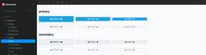
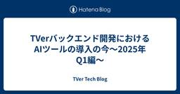

TVer Tech Blog
https://techblog.tver.co.jp/
TVer Tech Blog
フィード

TVer WebのUI構築 2
2
TVer Tech Blog
TVerのWebフロントエンドエンジニアのJeun Yun (Paul) Tsangです。2024年から始まったWebフロントエンド開発の内製化によって改善した、 tver.jp のUI構築の考え方を紹介します。 tver.jpの技術スタック 以下は改善後のフロントエンド技術スタックです。 Next.js（クライアントサイドレンダリングのみ） CSS ModulesとSassでスタイルの定義 StorybookとChromaticでコンポーネントの検証 Radix PrimitivesのUIライブラリーで汎用コンポーネントの構築 Biomeのコードフォーマッターとリンター 内製化で見えてきた課…
1日前

TVerバックエンド開発におけるAIツールの導入の今〜2025年Q1編〜 2
TVer Tech Blog
みなさん、こんにちは。TVer サービスプロダクト本部バックエンドEMの和田(@tench_oo)です。 いきなりですが、世の中AIが著しく成長していっていますよね。 取り残されないようにしないといけないと思い情報収集するのも大変なほど、日々新しい刺激が待っているのが今のAIの状況な気がしています。 そんな環境で、バックエンド部でもAI開発ツールの導入を進めていて実際に活用しており、その取組を一部ご紹介していきたいと思います。 (TVerもちゃんとAIを活用しはじめているんだよ。というアピールです。) バックエンド部が活用するAIツール 現在バックエンド部では、いくつかのAI開発ツールの導入検…
5日前

Google Cloud Next '25に参加しました
TVer Tech Blog
はじめに こんにちは。広告プロダクト本部の髙品です。私は、TVer広告の配信システムおよび広告周辺領域のシステム開発・保守を担うチームのSREです。先月、4月9日から4月11日の3日間にLas VegasのMandalay Bay Convention Centerにて開催されたGoogle Cloud Next '25に参加しました。TVer社としては3年連続の参加で、今回は2名が参加しました。すでに開催から1ヶ月以上が経過し、Google Cloud がGoogle Cloud Next '25 で行われた 229 の発表のまとめというブログ記事をポストしているため、新機能やアップデートの…
1ヶ月前
Androidエンジニアとして入社した最初の数ヶ月
TVer Tech Blog
こんにちは。TVerでAndroidエンジニアをしている西田です。2025年1月に入社し、早くも数ヶ月が経ちました。 今回は、入社後のオンボーディングを通して感じたことや取り組んだことについて紹介したいと思います。 バックエンド側のオンボーディングの取り組みについての記事もあるのでそちらもぜひ合わせて御覧下さい。 techblog.tver.co.jp オンボーディング中 入社初日は、まずTVer社内全体でのオンボーディングがありました。そちらは入社時期が一緒のメンバーとオフィスの会議室に集まって、社用携帯とPCのセットアップ、セキュリティ講座や、TVerの社内制度や事業について説明を受けまし…
1ヶ月前
NAB Show 2025 参加レポート
TVer Tech Blog
はじめに こんにちは。広告プロダクト担当の 大野です。 2025年4月6日から9日にかけて、米国ラスベガスで開催されたNAB Show 2025に、TVerからは今回3名で参加しました。 NAB Showは、毎年ラスベガスで開催される世界最大級の放送・映像・メディア業界向け展示会・カンファレンスです。世界中の企業が最新技術や製品を発表し、業界の最新トレンドや未来像を学ぶことができる場として、日本からも多くの放送関連企業が出展・参加しています。 このブログ記事では、NAB Show 2025での私の参加内容についてご紹介します。 今回NAB Showに参加した経緯 日本では、AVOD（広告付きビ…
2ヶ月前
try! Swift Tokyo 2025に参加しました！
TVer Tech Blog
こんにちは、TVerでiOSエンジニアを担当している福島です。 先日開催された try! Swift Tokyo 2025 に参加してきました！ 今回、私たちはスポンサーとして企業ブースを出展し、セッション聴講や他社のエンジニアの方々との交流など、非常に充実した時間を過ごすことができました。この記事では、当日の様子を簡単にご紹介したいと思います。 try! Swift Tokyoとは？ try! Swift Tokyo は、Swiftに特化した国際カンファレンスで、日本国内だけはなく海外からも多くのエンジニアが一堂に会するイベントです。 セッションの多くは英語で行われ、最新技術の共有や、開発に…
2ヶ月前
TVerバックエンドAPIのリアーキテクチャ
TVer Tech Blog
TVerバックエンドチームの id:takanamito , 小林 ( @k0bya4 ) です。 この記事では、TVerにおけるAPIリアーキテクチャについて紹介します。 ここでいうリアーキテクチャはAPIサーバーのソフトウェア的なアーキテクチャを変更する作業のことを指します。一部インフラにも変更点はありますが、今回の記事ではソフトウェアのリアーキテクチャにフォーカスして書いていきます。 今回の記事では、なぜリアーキテクチャをするのか、どのような課題を解決しようとしているのかを整理して解説します。 リアーキテクチャをする理由 新アーキテクチャの設計方針 オニオンアーキテクチャの採用 プロセス…
3ヶ月前
TVerサービスの継続的安定への取り組み
TVer Tech Blog
はじめに TVerのSREチームでインフラ周りやサービス監視オブザーバビリティーを担当しています西尾です。 この度はサービスとしての認知が広まり、配信プラットフォームとしての社会的な重要性も高まってきたTVerサービスについて運用面からの取り組みを紹介していきたいと思います。 現在Tverに関しては、多くのユーザーから視聴していただいていますが、サービス提供に関するステークホルダーとしてはこの視聴されていますユーザー以外にも、配信を行うコンテンツを制作提供している各放送局の方々も含まれ、サービスとしてはBtoC/BtoBの両方の性質をもっています。 そのため、サービスの安定稼動についてはこれか…
4ヶ月前
TVerはtry! Swift Tokyo 2025に協賛します！
TVer Tech Blog
こんにちは、TVerでエンジニアリングマネージャーをしている高橋 (@ukitaka) です。 TVerはtry! Swift Tokyo 2025にゴールドスポンサーとして協賛させていただくことになりました！ TVerのiOSチームの近況 以前iOSDC Japan 2024で発表させていただいたタイミングではまだまだ立ち上がり途中だったチームも、当時から人数がなんと3倍 (※1人 → 3人) になり順調に大きくなってきています。 また昨年末からtry! Swiftオーガナイザーの1人である松舘さんにも技術アドバイザーとしてご参画いただいています。 techblog.tver.co.jp T…
4ヶ月前
松館大輝 (@d-date)さんに iOSの技術アドバイザーとして就任いただきました
TVer Tech Blog
こんにちは、TVerでエンジニアリングマネージャーをしている 高橋 (@ukitaka) です！ 昨年末から松館大輝 (@d-date) さんにTVerのiOSアプリの技術アドバイザーに就任いただきましたので、この記事でお知らせさせていただきます。 松館 大輝（まつだて だいき） 東京を拠点に活動する iOS Developer。世界中から Swift の開発者が集まる try! Swift Tokyo のメインオーガナイザーを務める。またスタートアップ数社、内閣官房 IT 総合戦略室（デジタル庁準備室）を経て、現在ではデジタル庁エンジニアユニット長を務める傍ら、さまざまな企業でアプリ開発の支…
4ヶ月前
TVerのエンジニア組織の歩み
TVer Tech Blog
サービスプロダクト本部技術統括（TVerサービス開発部門内のVPoEみたいなポジション）兼バックエンド部部長の脇阪(@tohae)です。 この記事はTVerアドベントカレンダー 2024 25日目の記事です。24日目の記事はSREチームの鈴木さんの「AWS re:Invent 2024に1人で参加してきました」でした 今年の1月からEMとして入社し、約1年間開発組織の拡大や開発生産性の向上のためにいろいろな取組みを行ってきました。 本記事では約1年前のTVerのエンジニア組織がどのような課題を抱えていて、それに対してどのような手を打ってきたかというところをまとめます。
6ヶ月前
iOSDC Japan 2024登壇してきました&その後！
TVer Tech Blog
はじめに この記事はTVerアドベントカレンダー2024 20日目の記事です。 19日目の記事は @0906koki さんの TVerのWeb フロントチーム内製化への道のりとこれから でした。 こんにちは。TVerでiOSエンジニアをしている 小森 @mathtanguu です。 今回は少し間が空いてしまいましたがiOSDC Japan 2024で登壇した話と結果その後どのような反響があったのかを記事にしたいと思います。 iOSDC Japan 2024 以前の参加レポートで弊社EMの高橋が記事にしてくれたように、今年のiOSDC Japan2024のスポンサーセッションにて、「月間4.5億…
7ヶ月前
TVerのWebフロントチーム内製化への道のりとこれから
TVer Tech Blog
TVer で Web フロントエンドエンジニアをしている永井です。 この記事は TVer アドベントカレンダー 2024 19 日目の記事です。 18 日目の記事は @k0bya4 さんによる 「Atlasを使った宣言的マイグレーションでDBスキーママイグレーションを自動化する」 でした。 19 日目の記事では、Web フロントエンドチームの内製化について紹介します。 ※ TVer の Web フロントエンドは、広告プロダクトである「TVer 広告」の配信システム・広告周辺領域の開発を行うチームと、tver.jp といったユーザー向けのプロダクトを開発するチームの 2 つあり、今回の話は後者に…
7ヶ月前
Atlasを使った宣言的マイグレーションでDBスキーママイグレーションを自動化する
TVer Tech Blog
はじめに この記事はTVerアドベントカレンダー2024 18日目の記事です。 17日目の記事は @HaSuzuki さんの 「Jetpack Compose で AppSearch に対応する」 でした。 こんにちは。TVerでバックエンドエンジニアをしている 小林 @k0bya4 です。 今回はDBマイグレーションツールであるAtlasを導入して、DBのスキーママイグレーション作業の自動化を進めていることについて書きます。 DBスキーママイグレーションの自動化 自動化前の課題 TVerサービスのバックエンドではDBスキーマのマイグレーションが必要なケースで手動でのクエリ実行によるスキーマの…
7ヶ月前
Backend Enabling Teamと立ち上がりの半年
TVer Tech Blog
本記事はTVer Advent Calendar 2024の15日目の記事です。 14日目の記事は @gapao_ken さんの「テレビ局の技術職がPMに挑戦」でした。 はじめに こんにちは、3年連続で15日目の記事を書いているバックエンドエンジニアの伊藤です。今年もよろしくお願いします。 15日目の記事では、2024年7月に出来たBackend Enabling Teamの最初の半年について振り返っていきたいと思います。 立ち上げ期のこの半年間、どこを見て何をしたのかを書こうと思います。 TVerにおけるBackend Enabling Team 機能開発チームがメンバーの能力になるべく依存…
7ヶ月前
テレビ局の技術職がTVerのPMに挑戦
TVer Tech Blog
1.はじめに TVerで、プロダクトマネージャー(PM)としてプロダクト戦略/開発を担当している松村です。こんにちは！ こちらは、TVer Advent Calendar 14日目の記事となります。 前回は、@fujioka_さんの「Google Cloudのコストレポートで急に利用料が0円になった話」でした。 さて、TVerの掲げているMissionを最初に。 TVer コーポレートサイトより 2023年10月にテレビ局からTVerに出向して約1年強、“TVer”というサービス/プロダクトが、どんな体験をユーザーの方々に提供していくとワクワクする未来に近づくのか、考える日々です。 TVerで…
7ヶ月前
テレビ配信サービスだけではないTVer
TVer Tech Blog
こんにちは。 TVer Advent Calendar 2024の12日目の記事を担当するおかみと申します。 11日目の記事は @slme_not_found さんの ListDetailPaneでのアダプティブな左右分割画面の実装 でした。 私はTVerで配信している番組の管理やサイトの表示を設定しているCMS等と、TVerのオウンドメディアの開発ディレクションを担当しています。 TVerのオウンドメディアって...？ 実はTVerは民放公式テレビ配信サービス以外にもサービスを持っているのです。 それが Screens というメディアサイトです。 実は正直な話、社内でもそれほど知名度があるわ…
7ヶ月前
TVer 広告プロダクト開発タスクの SRE になってからの1年間を振り返る
TVer Tech Blog
この記事は TVer アドベントカレンダー 2024 10日目の記事です。 こんにちは、TVer 広告事業本部でインフラエンジニア・SRE をしている髙品です。 9日目の記事は @smizuno2018 の 独自実装した FeatureFlag によるシステム移行でした。 10日目の記事では、TVer 広告プロダクト開発タスクの SRE になってからの1年間を振り返り、2024 年の SRE の取り組みを点検しつつ、2025 年の SRE の取り組みを考えてみたいと思います。 まえがき 個人的なことですが、私が TVer 広告プロダクト開発タスクに参加したのは 2023年11月なので、この記事…
7ヶ月前
独自実装したFeature Flagによるシステム移行
TVer Tech Blog
TVerでバックエンドエンジニアをしている水野といいます。 この記事はTVer アドベントカレンダー 2024の9日目の記事です。 8日目の昨日は @pikopiko_hammer さんによる 「Webディレクター目線でダークモード対応の思い出を振り返る」 でした。 今日は、睡眠時や仕事中以外はTVerで動画を見ているTVer大好きな私が、最近アサインされたプロジェクトについてお話しします。 はじめに 現在、私はTVerの一部システムの移行作業を行っています。短期間で移行できる規模ではなく、半年規模でいくつかのリリース日に分けた移行計画で対応しています。 移行計画の課題 いくつかのリリース日に…
7ヶ月前
BigQueryのExternal Tableのスキーマ変更に対応する方法の一つ
TVer Tech Blog
TVerでデータシステムの開発・運用をしている黒瀬です。 TVer Advent Calendar 2024の4日目の記事です。 3日目の昨日は @ko-ya346 さんによる 「Terraform + GitHub でデータマート基盤を作った話」 でした。 今日は、BigQueryでExternal Tableのスキーマ変更に対応する方法の一つについてご紹介いたします。 サマリ BigQueryのExternal Tableをスキーマごとにバージョン分けし、それを包含するviewを作成することで、データのスキーマ変更にも対応しやすくなります。 背景と課題 弊社のデータシステムでは、データをG…
7ヶ月前
Terraform + GitHub でデータマート基盤を作った話
TVer Tech Blog
こんにちは。TVer でデータ分析をしている高橋です。 こちらは TVer Advent Calendar 2024 の3日目の記事です。 2日目の記事は @takanamito さんの connect-goでHTTP GETリクエストを受け取る でした。 この記事では分析環境を効率化するために弊社で活用している、Terraform と GitHub を使ったデータマート基盤をご紹介します。 開発のきっかけ これまで分析業務は、データレイクに集約された生ログを都度前処理し、個別の集計作業を行っていました。クエリ作成のたびに手作業でロジックを組み立てるか過去のクエリからロジックをコピペするような…
7ヶ月前
TVerにおける技術統括事務局の取り組み
TVer Tech Blog
この記事はTVer アドベントカレンダー 2024 1日目の記事です。 どうも、TVerでEngineering Managerをしてる 高橋 @ukitaka といいます。 アドベントカレンダー初日のこの記事ではTVerのプロダクトや組織がどんな状況に置かれていて、どんな課題に向き合い、それらをどう解決していこうとしているのかついて俯瞰的に書いてみようと思います。 結果としてこの1年でどうエンジニア組織が変化したのか？については 最終日に技術統括の脇阪さんに熱く語ってもらう予定なのでお楽しみに！ “技術統括事務局” について この1年でTVerは内製開発のための体制が整い、社内でいくつかの開…
7ヶ月前
TVerにバックエンドエンジニアとして中途入社した最初の3ヶ月
TVer Tech Blog
はじめまして。id:takanamitoです。 バックエンドエンジニアとしてTVerに入社して3ヶ月が経ちました。 TVerに入ってみて感じたこと、開発組織が何に取り組んでいるのか書いてみようと思います。 TVerのオンボーディング ドキュメントをたくさん書く文化を広める たくさん質問・相談する TVerが取り組んでいる開発とは この先やりたいこと
9ヶ月前
TVerはDroidKaigi 2024に協賛します
TVer Tech Blog
こんにちは、TVerでAndroidエンジニアをしている石井です。 株式会社TVerはDroidKaigi 2024のサポーターとして協賛することになりました。 DroidKaigiとは DroidKaigiはエンジニアが主役のAndroidカンファレンスです。 今年で10年を迎えるDroidKaigiは、Android技術情報の共有とコミュニケーションを目的に、2024年9月11日(水) - 13日(金)の3日間開催します。(HPより引用) オフライン会場: ベルサール渋谷ガーデン TVerとAndroid TVerは昨年Androidエンジニアが2名入社し、昨年9月頃に完全内製化が完了しま…
10ヶ月前
iOSDC Japan 2024に参加してきました！
TVer Tech Blog
みなさんこんにちは、TVerでEngineering Managerをしている高橋 (@ukitaka) です。 8/22-8/24で開催されたiOSDCに参加してきましたので、 少々遅くなりましたが #iwillblog しておこうかなと思います！ 久しぶりのiOSDCオフライン参加 前夜祭参加組で記念撮影 個人的な話にはなってしまうのですが、iOSDCオフライン参加するのはかなり久しぶりで 2018年に登壇して以来6年ぶりでした。 当時の発表資料 speakerdeck.com もはや界隈から忘れ去られているかもなとドキドキしながら会場入りしたんですが、いろんな方々にお声がけいただいただけ…
10ヶ月前
Backend Enabling Team ができました in TVer
TVer Tech Blog
はじめに こんにちは。TVerでバックエンドエンジニアをやっている伊藤(@kanataxa)です。 TVerをより多くの方に利用していただくために、バックエンドチームでは機能開発と並行して開発サイクルの高速化や品質向上にも取り組んでいます。 その中で2024/7に組織変更が行われ、「開発サイクルにフォーカスする」ことを目的としてEnabling Teamが立ち上げられました。 今回はそのEnabling Teamについてです。 TVerのバックエンドチームの現状と合わせて、これから何をしていくのかを書いていきたいと思います。 TVerのバックエンドチームの現状 バックエンドチームはTVerサー…
1年前
CloudNativeDaysSummer2024で登壇しました #CNDS2024
TVer Tech Blog
はじめに はじめまして！ TVerのSREチームでオブザーバビリティ推進を担当している鈴木 彩人と申します。 6/15(土)に札幌で開催されたCloudNative Days Summer 2024にて登壇しました！ event.cloudnativedays.jp 本イベントのダイヤモンドスポンサーであるNew Relic様から声をかけていただいたため、貴重な体験ができると思い登壇することにしました。 （弊社では会社の費用でカンファレンスに参加できる非常に良い制度があります） CloudNative Daysについて 公式サイトより引用。 CloudNative Days はコミュニティ、企…
1年前
TVerはiOSDC Japan 2024に協賛します！
TVer Tech Blog
こんにちは、TVerでエンジニアリングマネージャーをしている高橋 (@ukitaka) です。 TVerは今年もiOSDCに協賛させていただくことになりました！ TVerとiOSエンジニア 昨年のiOSDCの時点では「iOSエンジニアがいなくても泣かない！配信サービスのiOSアプリにおける オブザーバビリティの導入と改善」というタイトルで発表があった通り、TVerにはiOSエンジニアが不在の状況だったのですが、昨年1名iOSエンジニアが入社したところからチームが立ち上がり、今年4月には完全内製化が完了しました。さらに5月には元iOSエンジニア(？)の自分もエンジニアリングマネージャーとしてjo…
1年前
実務でのテーブル結合時のケア（重複排除など）について
TVer Tech Blog
こんにちは、TVerでデータ分析をしている高橋です。 弊社の分析業務の多くは BigQuery に蓄積されているログを使った分析で、大量のログを扱うため前処理から集計まで全てSQLで行っています。 本記事では、SQLを書く上で特に気を付けているテーブル結合時のケアについて紹介します。 分析業務の一例 「ホーム画面を開いてから10分以内にコンテンツを再生した割合を知りたい」という依頼が来ました1。 この集計は訪問ログと視聴ログを使い、ホーム画面に訪問したログを10分以内に再生した or 再生してないの2種類に分ければできそうです。 ここで、集計に用いるテーブルを簡単に紹介します。 訪問ログ (v…
1年前